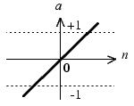
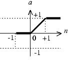
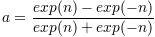

自己动手写神经网络
Billy

人工神经元模型
人工神经元的模型：
人工神经元的模型
该神经元拥有3个输入p1、p2和p3。其中，w和b是根据网络情况不断进行调整的，而传入函数s和传输函数f是事先选定，那究竟有哪些函数可以选择呢？传入函数比较简单，最常用的只有按照权重求和，在本例中，s处的输出（净输入n）就是：  将该输出会作为参数传入输出函数f，并作为该神经元的最终输出。 常用的传输函数有：
将该输出会作为参数传入输出函数f，并作为该神经元的最终输出。 常用的传输函数有：
| 函数名称 | 映射关系 | 图像 | 缩写 |
|---|---|---|---|
| 阶梯函数 | a=0, n<=0 a=1, n>0 |
 |
Step |
| 符号函数 | a=-1, n<=0 a=1, n>0 |
 |
Sgn |
| 线性函数 | a=n |  | Linear |
| 饱和线性函数 | a=0, n<0 a=n, 0<=n<=1 a=1, n>1 |
 | Ramp |
| 对数S形函数 | a=1/(1+exp(-n)) |  |
Sigmoid |
| 双曲正切S形函数 |  |  |
Tanh |
假设p1=1，p2=0，p3=2，w1=1，w2=-1，w3=1，b=-1，则神经元的净输入为： p1w1+p2w2+p3w3+b1
=11+0-1+21-1
=2
此时，传输函数与神经元输出的关系如表所示
| Step | Sgn | Linear | Ramp | Sigmoid | Tanh |
|---|---|---|---|---|---|
| 1 | 1 | 2 | 1 | 0.881 | 0.964 |
传输函数在神经元模型中非常重要，通常会选择特定的传输函数来解决特定的问题。这里再强调3类函数。首先值得注意的是Step函数，它非常简单，当输入小于0时，函数输出0，大于0时，输出1。该函数可以把输入简单得分为2类。在后续讲到的感知机中，就使用了该函数。
其次，另外一个值得注意的函数是Linear线性函数，它总是简单的返回输入值。在一个Adaline网络中，会使用该函数。Adaline类似于感知机，但是因为使用线性函数和其对应的改良学习算法，Adaline相比感知机，可以更好的处理网络噪声。 最后一个值得注意的函数是Sigmoid函数，它接收任意实数输入，并将结果对应到0和1之间。该函数是可导的。因此，在BP神经网络中使用该函数（BP神经网络学习过程中，需要对传输函数求导）。
单个神经元就可以构成一个最简单的神经网络——感知机。感知机可以处理简单的分类问题。比如，现在有2类水果，苹果和香蕉，人们通过识别苹果和香蕉的形状和颜色差别，来区分苹果和香蕉两种水果。刚出生的婴儿无法区分苹果和香蕉，因为在他们的大脑里，没有对应的分类信息。但通过不断地训练和外部刺激，告诉他们红色的圆形的是苹果，黄色的弯形的是香蕉，不需要多久，婴儿就可以分区这两类水果。用类似的方法也可以让感知机正确得对苹果和香蕉分类。具体的分类过程和原理，将在下一章节介绍。